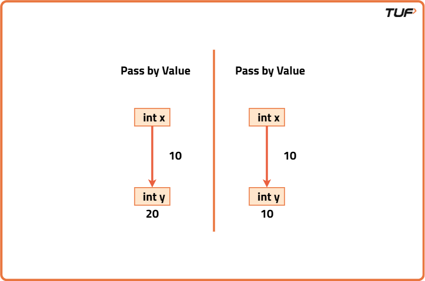

Functions (Pass by Reference and Value)
Before jumping into code, let’s first understand the concept with a real-life analogy. Imagine you are helping your friend prepare a resume. There are two ways to help:
- You take a photocopy of their resume and edit it. Their original stays unchanged. (This is pass by value)
- You take the actual resume and make edits. Now, their original resume is changed. (This is pass by reference)
This is exactly what happens in programming. Depending on the language and how you pass data to functions, you either pass a copy or the actual data.

What is Pass by Value?
When a variable is passed by value, a copy of the variable is made. The function works on that copy, and the original variable remains unchanged.
Imagine passing your Xeroxed mark sheet to a company. If they stamp or mark it, your original remains untouched. That’s pass-by-value.
Key Characteristics:
- The function receives a separate copy
- Changes inside the function don’t affect the original variable
- Safe, but potentially less efficient for large objects
What is Pass by Reference?
When a variable is passed by reference, the function receives the actual variable (not a copy). Any changes made inside the function will reflect on the original.
You give your friend your actual debit card to withdraw money. Any changes made (like balance deduction) affect your real bank account. That’s pass-by-reference.
Key Characteristics:
- The function receives the original memory address
- Changes inside the function affect the original
- Useful when you want to update multiple variables or return multiple values
Comparison Table
| Feature | Pass by Value | Pass by Reference |
|---|---|---|
| What is passed? | Copy of the variable | Reference (address) of the variable |
| Original data modified? | No | Yes |
| Used for? | Safety, when you don’t want to alter original | Efficiency or when modifying original is needed |
| Memory Usage | More (due to copies) | Less |
Pass by Value and Reference in Different Languages
C++
Pass by Value
#include <iostream>
using namespace std;
void modify(int a) {
a = a + 10;
}
int main() {
int x = 5;
modify(x);
cout << x << endl; // Output: 5
return 0;
}
Pass by Reference
#include <iostream>
using namespace std;
void modify(int &a) {
a = a + 10;
}
int main() {
int x = 5;
modify(x);
cout << x << endl; // Output: 15
return 0;
}
Java
Java is always pass-by-value, even for objects. But for objects, the value is a reference (confusing right?). So changes to object contents reflect.
Primitive (Pass by Value)
public class Main {
static void modify(int a) {
a = a + 10;
}
public static void main(String[] args) {
int x = 5;
modify(x);
System.out.println(x); // Output: 5
}
}
Objects (Pass reference by value)
class Wrapper {
int value = 5;
}
public class Main {
static void modify(Wrapper obj) {
obj.value += 10;
}
public static void main(String[] args) {
Wrapper w = new Wrapper();
modify(w);
System.out.println(w.value); // Output: 15
}
}
Python
Python uses a mix: everything is passed by object reference (technically "pass-by-assignment")
Immutable types like int (act like pass by value)
def modify(a):
a = a + 10
x = 5
modify(x)
print(x) # Output: 5 (int is immutable)
Mutable types like list (act like pass by reference)
def modify(lst):
lst.append(10)
nums = [5]
modify(nums)
print(nums) # Output: [5, 10]
JavaScript
Pass by Value for primitives
function modify(a) {
a = a + 10;
}
let x = 5;
modify(x);
console.log(x); // Output: 5
Pass by Reference for objects/arrays
function modify(obj) {
obj.value += 10;
}
let data = { value: 5 };
modify(data);
console.log(data.value); // Output: 15
Comparison Table
| Language | Pass by Value | Pass by Reference | Special Notes |
|---|---|---|---|
| C++ | Yes, works with primitives (int, double, char, etc.) by default. | Yes, explicitly using & in function parameters. |
Supports both styles. Choose based on performance and safety. |
| Java | Always pass-by-value, even for objects (copies the reference). | No true pass-by-reference, but objects’ internal data can change. | Reassigning the object inside the method won't affect caller's reference. |
| Python | Immutable types (int, str, tuple) behave like pass-by-value. | Mutable types (list, dict, set) behave like pass-by-reference. | Technically "pass-by-object-reference" the function gets a reference copy. |
| JavaScript | Primitives (number, string, boolean, etc.) are passed by value. | Objects, arrays, and functions are passed by reference to the object. | Reassigning the parameter breaks the link to the original object. |